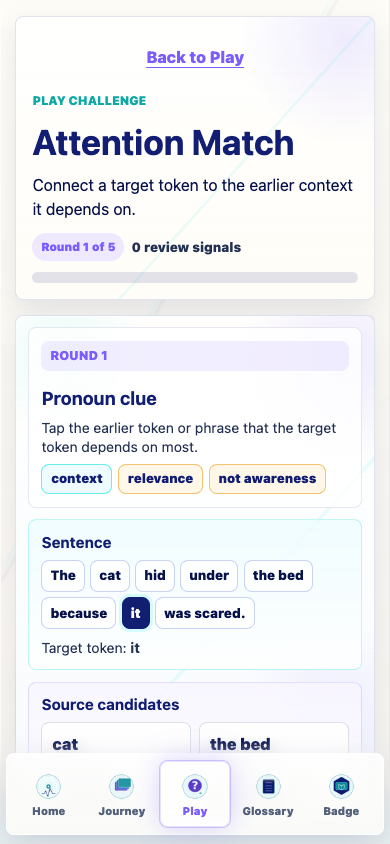
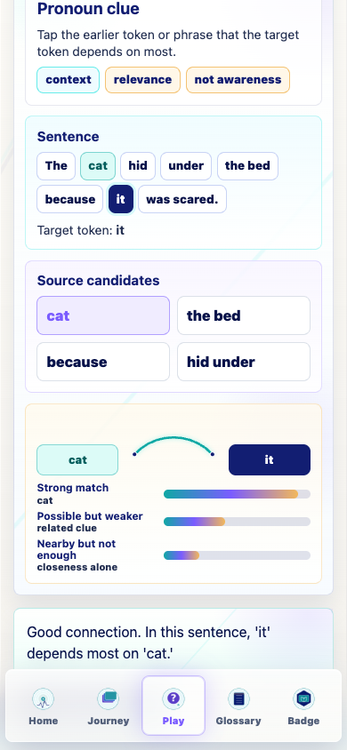
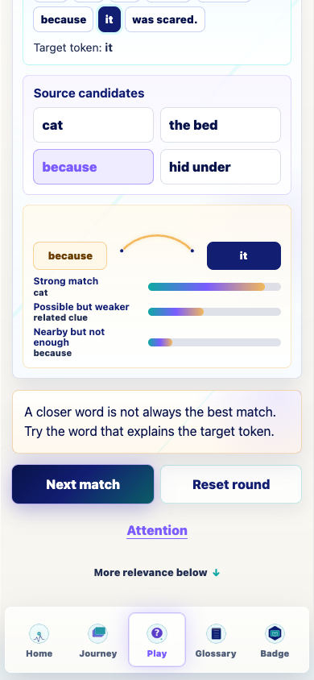
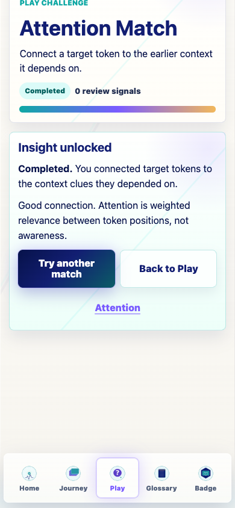
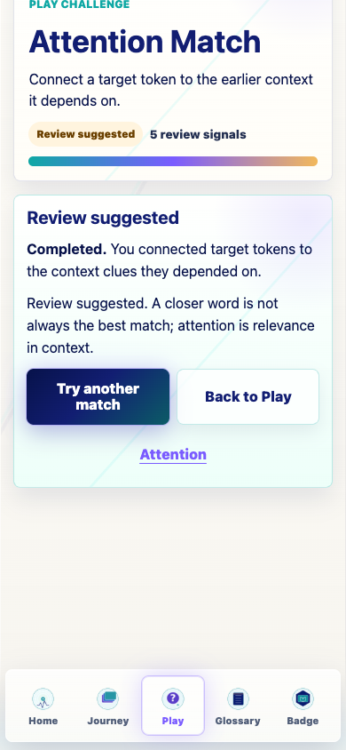
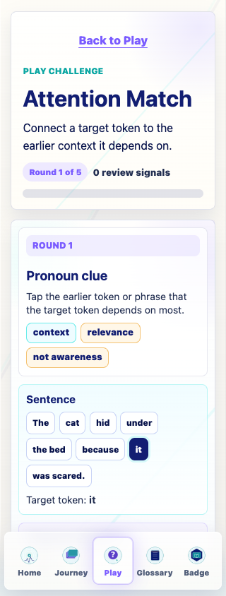
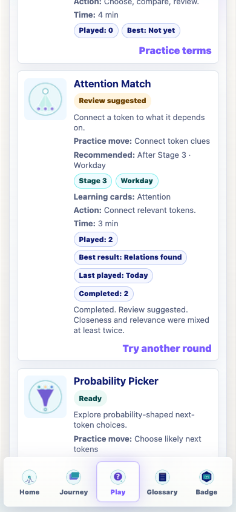
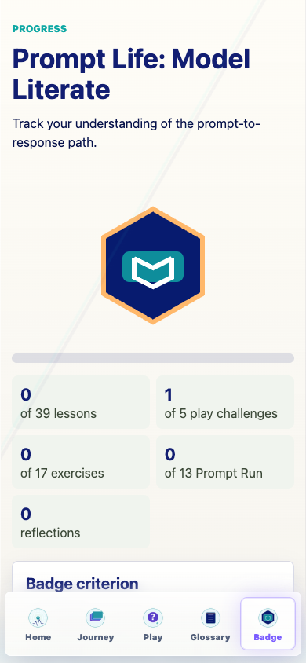

Prompt Life v0.27.1
This pass replaces the old Attention Weave compatibility interaction with a purpose-built five-round Play challenge about token relevance, context clues, and the limits of the attention metaphor.
promptlife.playChallenges.v1 with attempts, completions, last outcome, review-suggested state, and misconception tags.0.27.1.Learners practice attention as weighted relevance between token positions. The screen keeps the metaphor explicit: relevance is not awareness, intention, or mind-reading.
| Round | Target | Best source | Teaching point |
|---|---|---|---|
| The cat hid under the bed because it was scared. | it | cat | A pronoun can depend on an earlier noun. |
| Maya put the trophy on the shelf because it was heavy. | it | trophy | The clue word can make the source clear. |
| The professor praised the student after she solved the problem. | she | student | The later action can point to the right earlier person. |
| Before the lecture, the slides were updated, and they helped the class. | they | slides | Plural clues matter. |
| The answer sounded confident, but this did not make it true. | this | sounded confident | A phrase or idea can be the source. |
Challenge subtitle: "Connect a target token to the earlier context it depends on."
Success feedback: "Good connection."
Review feedback: "This choice reveals a common mix-up."
Completion: "Completed. You matched target tokens to context clues."
Review completion: "Completed. Review suggested. Closeness and relevance were mixed at least twice."
promptlife.playChallenges.v1.promptlife.glossaryDojo.v1.promptlife:v1:gameInsights, pl.gameInsights, promptlife:v1:traceComplete, pl.traceComplete, promptlife:v1:promptRunProgress, pl.promptRunProgress, promptlife:v1:learningTourComplete, and pl.learningTourComplete.completed, 1 attempt, 1 completion, and 100% best progress.review-suggested, 2 attempts, 2 completions, and 100% best progress.Review suggested after the review path.1 of 5 play challenges after Attention Match progress.Opened without horizontal overflow at 390px: Glossary Dojo, Context Stack, Probability Picker, Prompt Run, and Attention Match.
At 320px, the active Attention Match start state measured scrollWidth 320 and clientWidth 320.
npm run typecheck: passed.npm run build: passed with the existing Vite large-chunk warning.npm run build:pages: passed with the existing Vite large-chunk warning.npm run audit:answers: passed. Total surfaces: 69; randomized surfaces: 46; excluded fixed-order surfaces: 23.Attention Match v1 uses fixed examples and simplified arcs/weights. That is intentional: the goal is a clean mental model, not a literal attention-head visualization.
package.jsonpackage-lock.jsonsrc/features/play/challengeRegistry.tssrc/main.tsxsrc/styles/global.cssdocs/play/PLAY_FOUNDATION_LOG.mddocs/play/prompt-life-v0-27-1-attention-match-v1-report.htmldocs/play/prompt-life-v0-27-1-attention-match-v1-report.pdfdocs/play/screenshots/v0-27-1-attention-match-v1-screenshots.jsondocs/play/screenshots/v0-27-1-*.png






